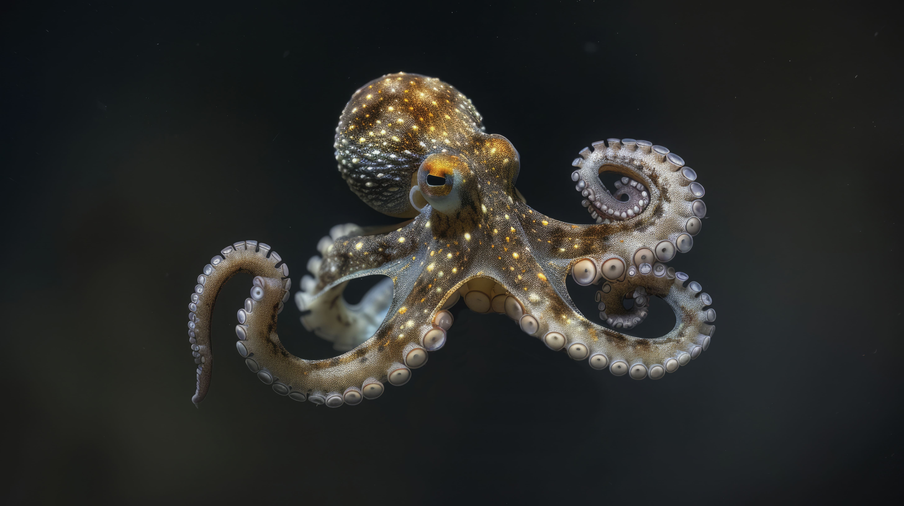
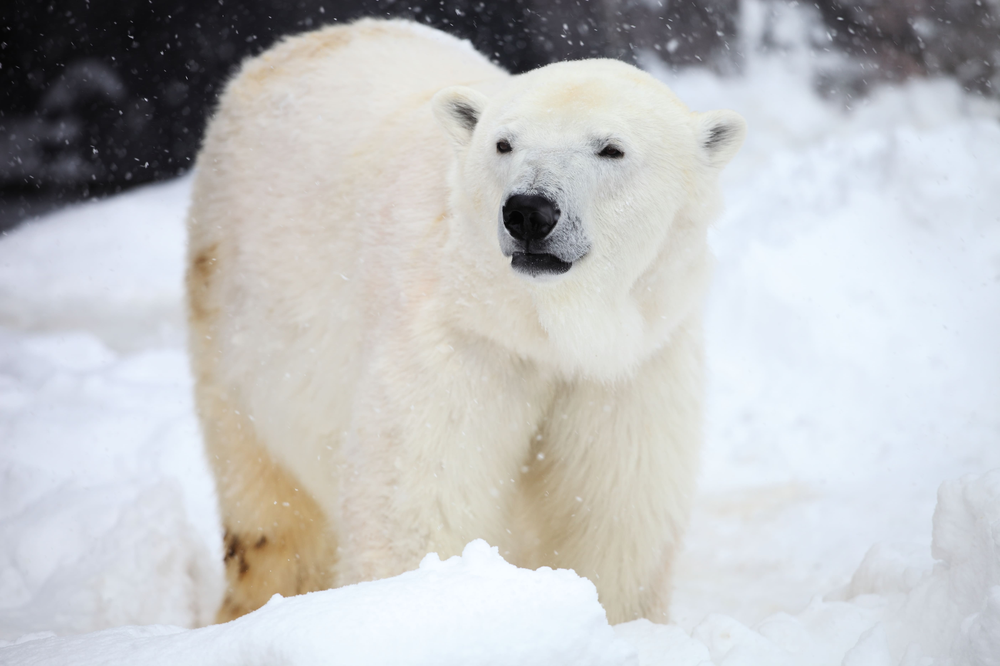
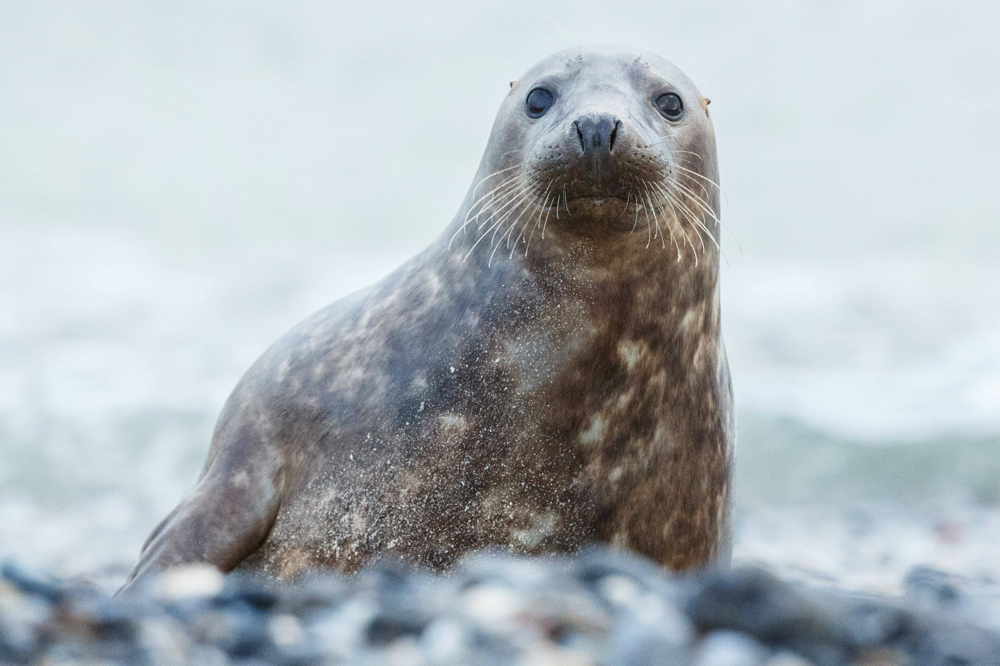

Pulpo gigante del Pacífico
El pulpo gigante del Pacífico es el más grande y el más longevo de todas las especies de pulpo.

Obsesión Polar
El fotógrafo Paul Nicklen ha pasado dos décadas capturando imágenes del Ártico y la Antártida, "un mundo remoto, crudo e implacable, bello, y sin embargo extremadamente frágil".

¿Cómo saben las focas cuánto tiempo deben aguantar la respiración?
Es posible que los mamíferos marinos sean capaces de percibir la cantidad de oxígeno que hay en su sangre, algo que los humanos no podemos hacer.